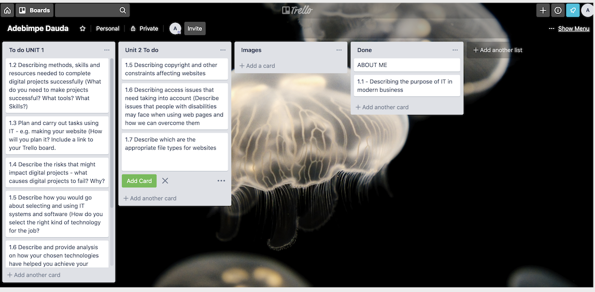

IT represents Information Technology. IT has changed in recent years as it is making human life easier as well as businesses since the arrival of the internet. In today's world, IT has become important in businesses either small or big to organise and manage all aspects of their business more efficiently. For small businesses, the use of technology has made it possible to level up with big businesses to develop competitive advantages in the economic marketplace, by using the most effective technology available [2].
Technology has happened to play an important role in businesses now in maintaining a great relationship between employees, suppliers and customers. Through the use of email, video chat (webinars), texting, websites, apps and social networking sites. This process also helps businesses to saturate the economic market with their message, also to receive consumer feedback through electronic communication methods. However, the use of mobile phone has made it easier for businesses to reach consumers in real time format [1].
Time management skills are very important for most people, but to successfully complete a project it is crucial for a person to manage their time effectively and be well organised by prioritizing tasks either personally or in a team[4].
Ability to Adapt and Problem-solving: for example group work. Where a member of a team is absent the other members of the team must carry on with the tasks, either by sharing the missing work among themselves or appoint another team member to get the job.
The above skills listed earlier are also essential to this section. However, it is advisable to always have a to do list where one can write down / list (e.g Trello, Slack) what will be needed to complete a task or project, by doing so one will not miss out on the most important things. Trello is a web based to do listing that helps with organising a project. Meanwhile slack a collaboration hub [8]that makes communication easy especially for team(s) to work together and get things done because channels are created for communication as a group or privately via “direct messaging[[7].
According to smallbixtrends.com, trello is a collaboration tool that gives you a visual overview of what is being worked on, who is working on it, and how far they’ve gotten. The tool organises person’s or team projects into boards, cards and lists [5].
I will be using trello and slack effectively when building my website project because it will help me with my visual tracking, planning, checklist and to keep track of my progress.
Unskilled Knowledge: A lack of skills on one operating system could be a risk. The use of Mac can be a high risk to person who is used to PC, then given a Mac to use will find it challenging because it is not what they are used to.
Software update is another high risk because if a project is not backed up or a new release of a software version can lead to missing project.
Before any software can be chosen, it is important to know what type of software is available so that necessary tools are chosen for the task either as an individual or as a team. For example Macbook, VSCode, Xcode, Slack etc.. has been good use when creating an app as group work. I would weigh up the advantages and disadvantages of any systems or software before use. Xcode is an integrated development environment for making apps just for IOS(s) because it can transits itself into composition of source code, to the process of debugging and even for designing the next user interface. For example, Xcode is free so it would not affect any project budget.
The use of Trello has help me organise and manage my project (group work, website) effectively because the visual boards are flexible, and let me list a ton of ideas and details into each card. The use of Git and Github to save my work when coding are another great files because the git system helps keep track of my entire project history files, whereas github is a web-based that controls git where developer network to share their codes or issues they are facing when coding and possible employment form from a recruiters [6]
In May 2018, General Data Protection Regulation (GDPR) was introduced by the European union law to set out rules on privacy and consent for the digital age. These regulations were designed to bring laws and obligations around personal data, privacy and consent across Europe [9] and to ensure that organisations are responsible in handling their customers’ personal data and that customers are aware of how their data are being used and consent are given to use it [10].